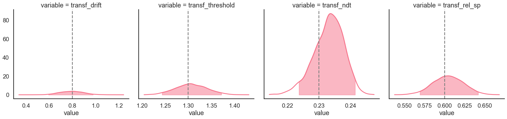

Parameter recovery of the DDM with starting point bias¶
[1]:
import rlssm
import pandas as pd
Simulate individual data¶
[3]:
from rlssm.random import simulate_ddm
[4]:
data = simulate_ddm(
n_trials=400,
gen_drift=.8,
gen_threshold=1.3,
gen_ndt=.23,
gen_rel_sp=.6)
[5]:
data.describe()[['rt', 'accuracy']]
[5]:
| rt | accuracy | |
|---|---|---|
| count | 400.000000 | 400.000000 |
| mean | 0.564827 | 0.840000 |
| std | 0.285185 | 0.367065 |
| min | 0.261000 | 0.000000 |
| 25% | 0.361750 | 1.000000 |
| 50% | 0.476000 | 1.000000 |
| 75% | 0.667000 | 1.000000 |
| max | 1.741000 | 1.000000 |
Initialize the model¶
[6]:
model = rlssm.DDModel(hierarchical_levels = 1, starting_point_bias=True)
INFO:pystan:COMPILING THE C++ CODE FOR MODEL anon_model_ba90c9ff5918c4555b6b624f8591f02b NOW.
Fit¶
[7]:
# sampling parameters
n_iter = 3000
n_chains = 2
n_thin = 1
# bayesian model, change default priors:
drift_priors = {'mu':1, 'sd':3}
threshold_priors = {'mu':-1, 'sd':3}
ndt_priors = {'mu':-1, 'sd':1}
[8]:
model_fit = model.fit(
data,
drift_priors=drift_priors,
threshold_priors=threshold_priors,
ndt_priors=ndt_priors,
thin = n_thin,
iter = n_iter,
chains = n_chains,
verbose = False)
WARNING:pystan:Maximum (flat) parameter count (1000) exceeded: skipping diagnostic tests for n_eff and Rhat.
To run all diagnostics call pystan.check_hmc_diagnostics(fit)
Checks MCMC diagnostics:
n_eff / iter looks reasonable for all parameters
0.0 of 3000 iterations ended with a divergence (0.0%)
0 of 3000 iterations saturated the maximum tree depth of 10 (0.0%)
E-BFMI indicated no pathological behavior
get Rhat¶
[9]:
model_fit.rhat
[9]:
| rhat | variable | |
|---|---|---|
| 0 | 0.999463 | drift |
| 1 | 0.999428 | threshold |
| 2 | 0.999969 | ndt |
| 3 | 0.999633 | rel_sp |
calculate wAIC¶
[11]:
model_fit.waic
[11]:
{'lppd': -84.4165465344934,
'p_waic': 3.631295141216568,
'waic': 176.09568335141995,
'waic_se': 48.46685345606353}
Posteriors¶
[12]:
model_fit.samples.describe()
[12]:
| chain | draw | transf_drift | transf_threshold | transf_ndt | transf_rel_sp | |
|---|---|---|---|---|---|---|
| count | 3000.000000 | 3000.000000 | 3000.000000 | 3000.000000 | 3000.000000 | 3000.000000 |
| mean | 0.500000 | 749.500000 | 0.880803 | 1.301814 | 0.234382 | 0.616586 |
| std | 0.500083 | 433.084792 | 0.112488 | 0.034720 | 0.004773 | 0.019893 |
| min | 0.000000 | 0.000000 | 0.513606 | 1.165148 | 0.215534 | 0.524463 |
| 25% | 0.000000 | 374.750000 | 0.805302 | 1.278279 | 0.231489 | 0.603545 |
| 50% | 0.500000 | 749.500000 | 0.884396 | 1.300699 | 0.234745 | 0.616995 |
| 75% | 1.000000 | 1124.250000 | 0.957056 | 1.324780 | 0.237767 | 0.629993 |
| max | 1.000000 | 1499.000000 | 1.270829 | 1.414547 | 0.247698 | 0.687491 |
[13]:
import seaborn as sns
sns.set(context = "talk",
style = "white",
palette = "husl",
rc={'figure.figsize':(15, 8)})
Here we plot the estimated posterior distributions against the generating parameters, to see whether the model parameters are recovering well:
[14]:
g = model_fit.plot_posteriors(height=5, show_intervals='HDI')
for i, ax in enumerate(g.axes.flatten()):
ax.axvline(data[['drift', 'threshold', 'ndt', 'rel_sp']].mean().values[i], color='grey', linestyle='--')
